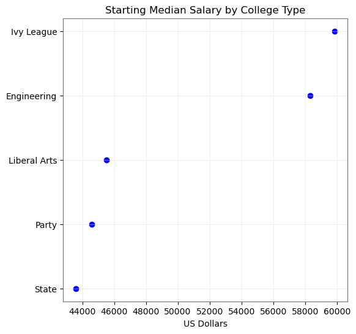
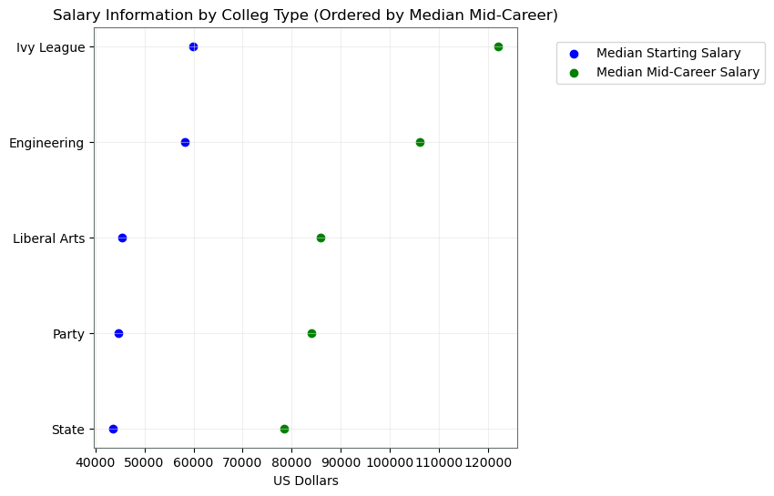
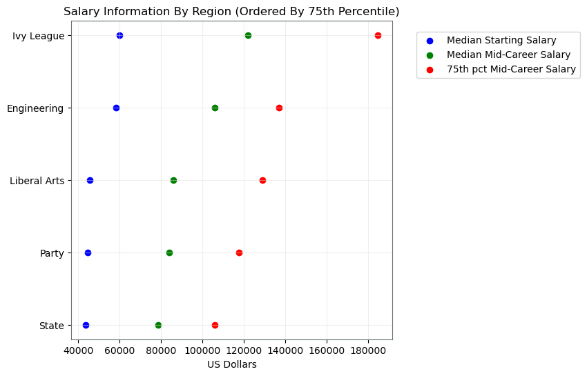
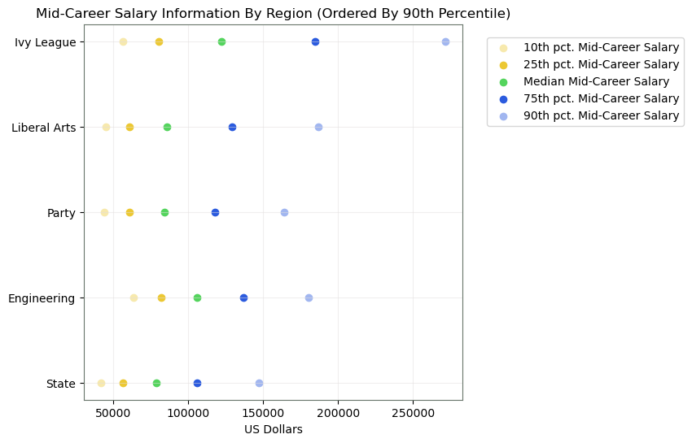

Viz 2 - Income By College Type
Figure 5 - Starting Median Salary By College Type

Figure 6 - Starting & Mid-Career Median Salary By College Type

Figure 7 - Starting, Mid-Career Median, 75th P

Figure 8 - Mid-Career Median Salary Percentiles by College Type

Overall Analysis of Figure 5 - 8:
Looking at the figures above, we can see that Ivy Leagues offer the greatest return on investment over time.
Surprisingly, in figure 8, we can see that the Liberal Arts and Party college types offered more return than Engineering schools. What could cause this?